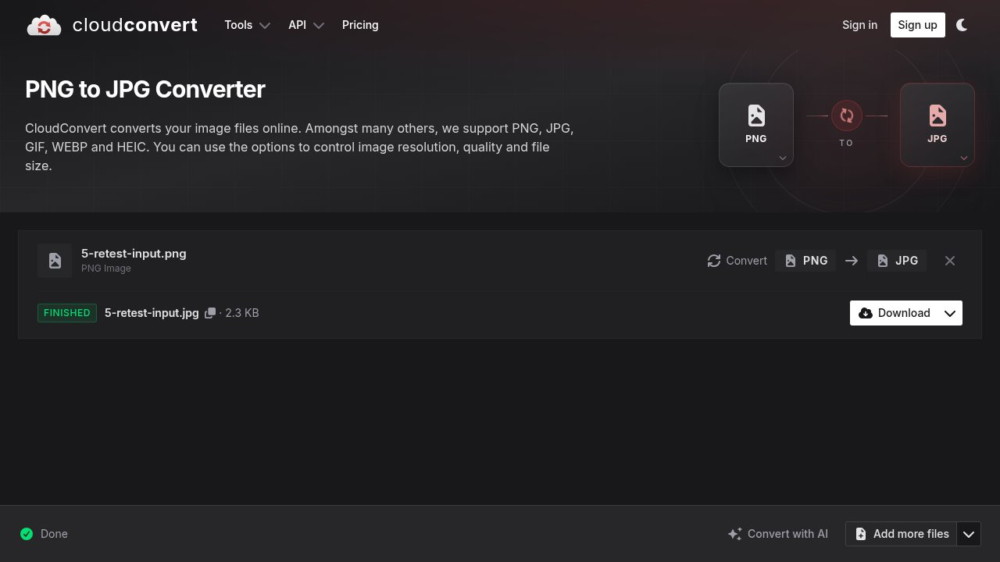

CloudConvert: convert files free in the browser, no app needed
PDF to Word, HEIC to JPG, MOV to MP4: CloudConvert advertises conversions between more than 200 formats, free in the browser with no app. We tested one conversion route without an account; here is what the official pages confirm and what our test found.
Quick facts
- Free file converter in the browser: documents, images, audio, video, archives and more.
- More than 200 formats, per CloudConvert's homepage.
- In our test, uploading a local file and converting it worked without any account; importing by URL did not.
- The free account plan gives 10 conversion credits a day and files up to 1 GB, per the official pricing page.
- Files are kept only for processing and deleted immediately afterwards, according to CloudConvert's security page.
One converter, 200-plus formats
CloudConvert turns files from one format into another inside the browser. Its homepage lists documents, images, audio, video, archives, spreadsheets, fonts and more, across more than 200 formats: routes like PDF to DOCX, HEIC photos to JPG and MOV video to MP4 are among the advertised options. You pick the input and output format, adjust options such as image resolution, quality and file size where relevant, and download the result. There is nothing to install, and it works the same in a phone browser.
Our test: PNG to JPG in about 30 seconds, no account

Without signing up, we uploaded a small PNG from the computer, chose JPG as the output and pressed Convert. The job showed a progress bar, then a green "Finished" badge with the converted file (a 2.3 KB JPG) and a Download button, all in about 30 seconds. We tested one route only; we did not test every format pair.
One honest friction note: importing a file by URL returned an "unauthenticated" error in our no-account session, so that import option appears to need a free account. Uploads from the computer worked without one.
Free limits and the paid options
CloudConvert's pricing page shows a free plan (presented with a Sign Up button) described as being for personal use, testing and hobby projects: 10 conversion credits a day with a daily reset, a maximum file size of 1 GB, up to 5 minutes of processing per job and 5 conversions at a time, at lower processing priority than paid plans. The same page explains that a general conversion has a base cost of one credit (office-to-PDF routes cost two, PDF-to-office routes four). The pricing page does not state a separate allowance for use without an account; our no-account test worked, but we cannot quote an official anonymous limit.
For heavier use there is a one-time "Package" payment whose credits never expire, and a monthly subscription. The free allowance is what we tested and what this guide covers.
Privacy and security
CloudConvert is run by Lunaweb GmbH, a German company, and its security page states that its information security management system is ISO 27001 certified by TÜV SÜd. The same page states that files are kept only for processing and deleted immediately afterwards, that CloudConvert intentionally provides no permanent storage, and that the company is bound by European GDPR rules. These are the provider's own statements; we did not audit its servers or network.
Why it matters for Indian users
File-format friction shows up constantly: an iPhone photo in HEIC that a college portal rejects, a WhatsApp video that needs to be MP4, a PDF that must become an editable Word file for an application form, or a document a website wants under a size limit. A converter that needs no app install and works in a phone browser is a practical everyday fix, especially on phones with limited storage. As with any online converter, avoid uploading sensitive documents and confirm the current free limits on the provider's pricing page.
Sources checked 23 October 2026: the CloudConvert homepage and our own conversion test, the official pricing page, and CloudConvert's security page, linked below.